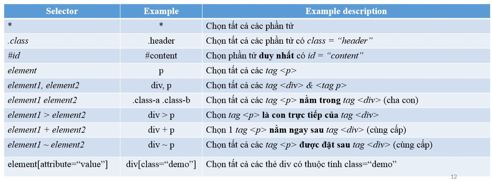

Buổi một - Giảng viên Hiếu - Edward
https://www.facebook.com/edward.dang0906?fref=gs&__tn__=%2CdlC-R-R&eid=ARCudXjDBJYoKATeGA_tcUTdLTJNabH3NdwXb0bXmxuNWgaGwz1mqLCgcVNKbWSMxn3xQWKPJAbT7NJ3&hc_ref=ARSOBb0tvvjzL6yOLX5MsxESFBSyZ8jE6m_iVLY_3NUOF-Kkab4A0WJgK5vIoSLUuBo&ref=nf_target&dti=683119522497112&hc_location=group
Quy định về học tập
- Nộp bài đúng dealine
- Code đúng theo yêu cầu
- Phải có mục tiêu
- Thực tế về mục tiêu
- Chọn tính nhất quán tốc độ
- Giũ vững ý chí
Một số kỹ năng
- Kỹ năng phân tích
- Nền tảng web
- HTML, CSS
- AJAX
- Responsive
- Javascript Framework (ReactJS, AngularJS
- CSS Framework
- ES6
- CSS PreProcessor
- Kỹ năng & coding style
- 13 Cross-browwer
- Testing & debugging
- Git
Nguyên tắc làm việc trong công ty
- Công việc không nuôi người nhàn hạ, tập thể không nuôi những kẻ lười
- Vào một đơn vị làm việc
- Không kiếm được tiền thì kiếm được kiến thức
- Chỉ khi thay đổi thái độ của bản thân
Làm sao tăng thu nhập
- Tham gia các dự án mã nguồn mở
- Viết các phần mềm, các app và chia sẻ code
- Tạo blog, stackoverflow, medium.org, youtube
- Làm miễn phí để tạo cộng đồng và thương hiệu cá nhân
Kỹ năng giải quyết vấn đề
- Xác định vấn đề đang xử lý
- Phân tích vấn đề
- Chia nhỏ các vấn đề
- Có giống 1 vấn đề đã xảy ra
- Mô hình hóa text -> kí hiệu
- Giải quyết vấn đề
- Giải quyết từng vấnd đề một
Khái niệm về web và internet
- Địa chỉ IP --> là địa chỉ của máy tính là một con số 32bit, dạng thập phân. Port là cổng vào. ví dụ: 192.168.3.1:
3000
- Cách trang web hoạt động
Mỗi trang web đều được chứa trên một máy tính nào đó (server) trên mạng internet
Địa chỉ trang web quá khó nhớ do đó chuyển qua domain
- User (clients) Browser gửi yêu cầu request tới máy tính nơi chứa dữ liệu của trang web bao gồm port.
- Máy tính trả kết quả html, images...
- Webpage
- Website
HTML
Hyper Text Markup Language --> Ngôn ngữ đánh dấu siêu văn bản
URL
- Tuyệt đối - Absolute
- Tương đối - Relative
- ./ là đi ra ngoài
- ../là đi ra 1 cấp trên
- ../../ là đi ra 2 cấp
Buổi 2
Tâm sự - dự án theo mô hình Scrum
- Product Manager
- Scrum marter
- Dev
Làm theo tiến độ print
Họp team để chia công việc cho từng developer. Ví dụ task là login thì hết bao lâu
Cái này làm trong 2 tuần để họp lại để đánh giá quá trình làm việc
CSS
CSS selector

Thứ tự ưu tiên CSS
- Inline CSS
- Internal CSS
- External CSS
- Browser default
Trong cùng một file CSS thì độ ưu tiên tính sao?
- id giá trị ưu tiên: 100
- Class có độ ưu tiên: 10
- Tag có giá trị ưu tiên: 1
- cùng Class thì class sau sẽ đè class trước